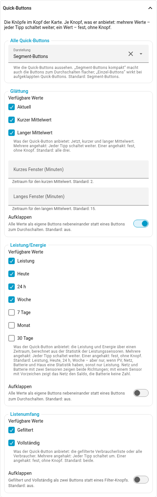
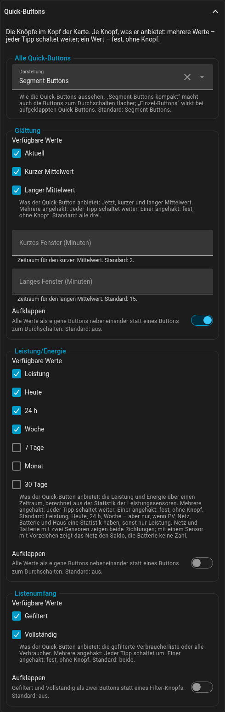

Quick-Buttons
Im Kopf der Karte gibt es bis zu vier Quick-Buttons; jeder Tipp schaltet zum nächsten Wert:
| Quick-Button | Werte | Schlüssel | Standard |
|---|---|---|---|
Glättung |
Jetzt, kurzer Mittelwert, langer Mittelwert |
|
alle drei |
Leistung/Energie |
Leistung, Energie über einen Zeitraum |
|
|
PV-Skala |
Anteile am Ring, Leistung im Verhältnis zur Spitzenleistung – nur mit mehreren PV-Quellen |
|
beide, soweit möglich – |
Listenumfang |
gefilterte Liste, alle Verbraucher |
|
beide |
So sehen sie im Standard aus – zum Ausprobieren, jeder Tipp schaltet weiter (die Karte darunter ist hier weggelassen):
Eingetragen wird, was ein Quick-Button anbieten soll. Ein Wert heißt fest: Der Knopf entfällt, und die Karte zeigt immer diesen Wert - auf jedem Gerät, für jeden Nutzer. Eine als Energie-Karte eingerichtete Karte bleibt also eine. Feste Werte außer der Augenblicksansicht nennt der Kopf („Ø 15 min“, „Energie: Monat“), damit niemand sie für einen Live-Wert hält.
Im Editor hat jeder Quick-Button einen Teil in der Gruppe Quick-Buttons: die Häkchen der Werte und den Schalter Aufklappen; ganz oben steht die Darstellung für alle zusammen.

view:
energy_periods: [month] # eine Energie-Karte: immer dieser Monat
modes: [current, avg_long] # ohne kurzen Mittelwert
list:
scope: [full] # immer alle VerbraucherEin Quick-Button mit mehreren Werten startet mit dem zuletzt gewählten Wert,
beim allerersten Öffnen mit dem ersten. Jede Karte merkt sich das für sich: Der Editor gibt ihr eine memory_id, damit zwei Exemplare
derselben Karte nebeneinander Verschiedenes zeigen können. Eine zweite Karte mit
derselben Kennung in derselben Ansicht (eine duplizierte) merkt sich ebenfalls
ihre eigenen Werte; eine Kopie in einer anderen Ansicht oder einem anderen
Dashboard ist ohnehin getrennt. Karten, die nur in YAML stehen und keine
memory_id haben, teilen sich wie bisher, was sie sich merken - ein beliebiger
eigener Name trennt sie. Was sie sich merkt, hängt an der Ansicht: In eine andere
Ansicht verschoben, nach Umbenennen der Ansicht oder - bei einer Ansicht ohne
eigenen path - nach dem Umsortieren der Ansichten startet sie einmal von vorn.
Mittelwerte gibt es nur für die Leistung: Ohne power in energy_periods
mittelt die Karte nie. In einem Zeitraum ist die Glättung ausgegraut.
Aufklappen und Darstellung. Statt eines Buttons, der bei jedem Tipp
weiterschaltet, kann jeder Quick-Button alle seine Werte nebeneinander zeigen:
im Editor in seinem Teil der Schalter Aufklappen, in YAML
view.expanded: [modes, energy_periods, pv_scales, scope]. Ein Tipp wählt dann
den Wert direkt. Unter Alle Quick-Buttons bestimmt Darstellung, wie sie
aussehen: Segment-Buttons (eine Leiste je Quick-Button, der gewählte Wert
gefüllt), Segment-Buttons kompakt (dieselbe Leiste, flacher – auch die
Buttons zum Durchschalten) oder Einzel-Buttons (jeder Wert ein eigener
Button, ein dünner Rahmen um den Quick-Button). Reicht der Platz nicht,
brechen die Quick-Buttons um, immer als Ganzes.
Segment-Buttons, alle aufgeklappt:
Segment-Buttons kompakt, nur Glättung und Leistung/Energie aufgeklappt – die beiden anderen schalten weiter:
Einzel-Buttons, alle aufgeklappt:
Der Energie-Standard. Ist energy_periods nicht gesetzt, bietet die Karte
Leistung, Heute, 24 h und Woche an - aber nur, wenn PV, Netz, Batterie und Haus
eine Langzeitstatistik haben. Das prüft sie einmal beim Laden (nur Metadaten,
keine Messwerte); sonst bleibt sie bei der Leistung und sagt in der
Browser-Konsole, warum. energy_periods: [power] schaltet den Energie-Modus ab.
Der Editor hat je Quick-Button eine Gruppe; das letzte Häkchen lässt sich nicht
abwählen. Das ältere view.show_selector: false gilt weiter und heißt: jeder
Quick-Button fest auf einem Wert. Der Editor macht beim Öffnen die Listen oben
daraus.